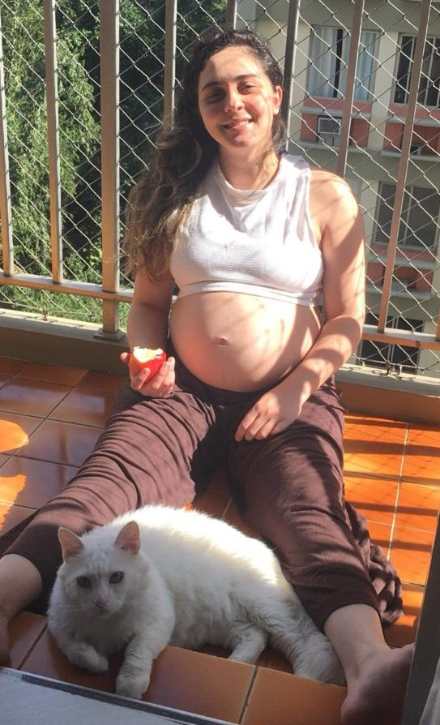

Acolhe · Conecta · Transforma
Tudo que importa, num único lugar.
App em desenvolvimento
Tudo que importa, num único lugar.
App em desenvolvimentoO primeiro teste. Positivo — e eu sem acreditar.
Fiz outro. Só para ter certeza de que era real.
A maternidade nunca esteve nos meus planos. Até ver aquele coração batendo na tela.
O mundo parado por uma pandemia. E ali dentro de mim, uma vida começando.
Reta final. Prestes a conhecer o amor da minha vida.
Bento chegou. E com ele, o começo de tudo.
Um mês antes do meu segundo filho nascer, veio o diagnóstico. No meio da barriga e do laudo, entendi o que eu precisava construir.
Hoje são dois. E o legado começa entre eles.



Se você é mãe, pai ou cuidador de uma mente única, já conhece o cansaço de sustentar tudo sozinho. Antes de falar de metodologia ou de aplicativo, o Legado Azul quer dizer uma coisa simples:
Quem cuida também precisa de cuidado.
Sou mãe de uma criança autista, nível de suporte 1. Quando o laudo chegou, a primeira sensação não foi de clareza — foi de isolamento. Eu precisava de terapias, de escola, de direitos, de uma rede de apoio. Mas cada um desses pilares existia num mundo separado, sem conversar com o outro.
"O Legado Azul é o sistema que eu gostaria de ter tido no dia do diagnóstico."
Escola, saúde, terapias e rotina. Cada área num lugar diferente, cada informação presa no seu próprio silêncio. No meio da fragmentação, famílias inteiras tentavam enxergar o todo sozinhas.
Nasceram assim os 4 pilares — Educação, Família, Saúde e Terapia. Juntos, formam o ciclo completo do cuidado consciente.
Na pós-graduação em Ciência de Dados, uma pergunta não me deixava em paz: e se os dados pudessem revelar a jornada de cada pessoa de forma integrada? A pesquisa confirmou o que a vivência já mostrava — cada mente é um oceano, profundo e ainda por descobrir.
"O problema nunca foi falta de cuidado. Era falta de conexão."
Da base que sustenta até a autonomia real, o Legado Azul acompanha essa jornada inteira — para que cada mente única se torne autora da própria história. E, no caminho, o cuidador nunca fica sozinho: encontra espaço, rede e apoio para si também.
Criptografia de nível bancário, acesso biométrico, transparência total. Tratamos seus dados como tratamos sua família. Você paga a assinatura — você não é o produto: sem anúncios, sem venda de dados.